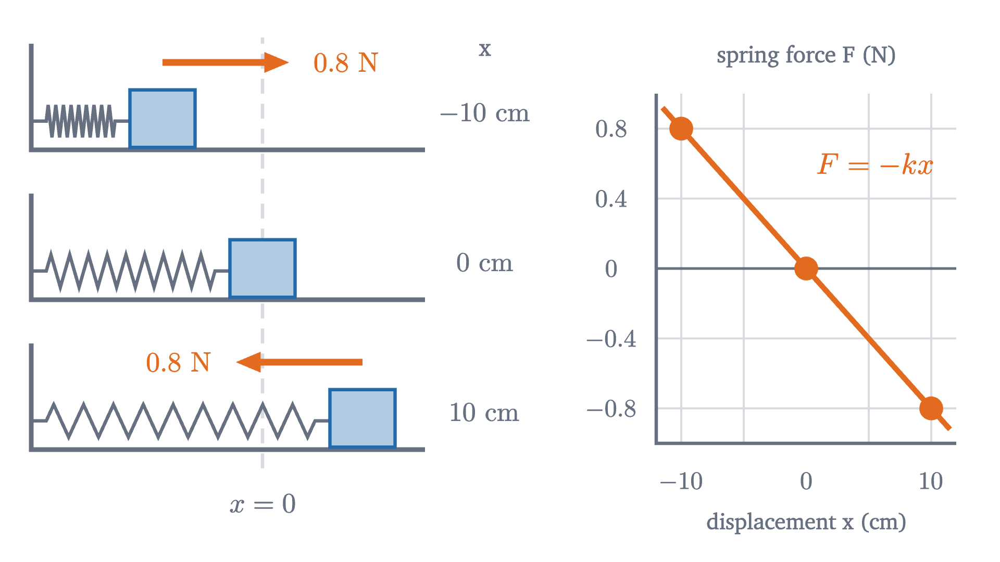
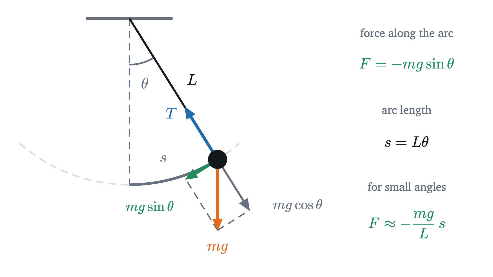
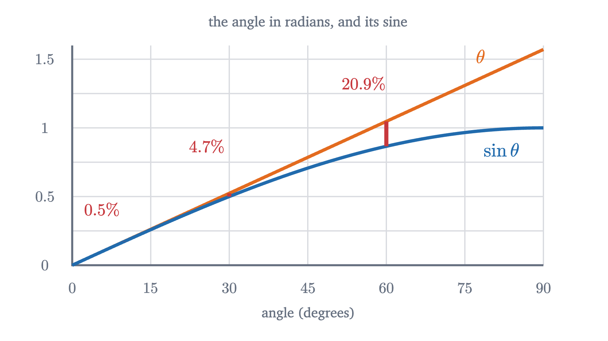

Simple harmonic motion: springs and pendulums
Why a mass on a spring takes the same time per swing however far it is pulled: Hooke's law and the shadow of circular motion, and why a pendulum nearly does.
AssumesNewton's second law, F = ma: what force really doesConservation of energy: a roller coaster's bookkeepingSine waves: amplitude, frequency and phase
Hook a block to a spring on a smooth table, pull it out 5 cm, and let go. It slides back through its resting position, overshoots, stops, and returns to your hand after some time. Now pull it out 10 cm instead. The block has twice as far to travel on every leg of the trip. Does the round trip take twice as long?
It takes exactly the same time, and so does a 1 cm pull. That is not true of most back-and-forth motions: a ball bouncing on the floor takes longer per bounce when dropped from higher. Something about a spring makes distance irrelevant to timing, and the same property is what makes a pendulum keep time.
Hooke’s law
A spring has a natural length. Stretch it and it pulls back; compress it and it pushes back. Measure the force for the spring in the animation and a simple pattern appears: 0.4 N at 5 cm of stretch, 0.8 N at 10 cm, 1.2 N at 15 cm. Each extra centimeter costs the same extra force.
Set up a coordinate. Let $x$ be the block’s displacement: its position measured from the place where the spring has its natural length, positive when the spring is stretched and negative when it is compressed. At $x = 0$ the spring exerts no force, so that point is the equilibrium position.

For our spring $k = 0.4 \text{ N} / 0.05 \text{ m} = 8$ N/m. Hooke’s law is an experimental rule about springs, with limits: stretch a spring too far and it deforms permanently, and the proportionality fails well before that. Within its range it is accurate to a percent or so for a good steel spring. We also take the spring’s own mass to be negligible and the table frictionless. That set of assumptions defines the ideal spring.
A force that changes as the block moves
Newton’s second law for the block, of mass $m$, says $ma = -kx$, so
The acceleration is not constant. It depends on where the block is: largest at the ends, zero at the center, and always pointing toward the center. The constant-acceleration equations do not apply, so we cannot read off how long a swing takes. Still, a rough estimate is possible.
Pause and try
The block ($m = 0.5$ kg, $k = 8$ N/m) is released from rest at $x = A$. Pretend the acceleration keeps its initial value all the way to the center, and estimate the time to get there, for $A = 10$ cm and for $A = 5$ cm. Is the estimate too short or too long?
Show answerHide answer
The initial acceleration has size $kA/m$. Starting from rest and covering a distance $A$ at that constant acceleration: $A = \tfrac12 (kA/m)\,t^2$, so $t = \sqrt{2m/k}$. The amplitude $A$ cancels. For both pulls, $t = \sqrt{2 \times 0.5/8} = 0.354$ s. It is too short, because the real acceleration fades as the block approaches the center. (The true time is 0.393 s.)
The estimate is crude, but the cancellation in it is exact, and here is why. Suppose some motion $x(t)$ obeys $ma = -kx$ at every instant. Double it: consider the motion in which the block is always twice as far from equilibrium. Its velocity and its acceleration are doubled at every instant, so it needs twice the force at every instant, and at twice the displacement the spring supplies exactly twice the force. So the doubled motion also obeys the law, on the same schedule. A larger swing has farther to go and is pushed proportionally harder all the way.
This argument uses only the proportionality of force to displacement. It tells us the period cannot depend on the amplitude. It does not tell us what the period is, or what the motion looks like in between. For that we need a function whose acceleration is, at every moment, a negative constant times its own value.
The shadow of a circle
One familiar motion has an acceleration that points back toward a center and is proportional to the distance from it: steady motion around a circle.
Let a peg ride on the rim of a wheel of radius $A$ that turns at a constant rate. Measure angles in radians, and let the wheel turn through $\omega$ radians each second, so that after $t$ seconds the peg is at angle $\omega t$, having started on the positive $x$ axis. By the definition of cosine on the unit circle, the peg’s $x$ coordinate is $A\cos(\omega t)$. That coordinate is the peg’s shadow on the floor under a light shining straight down.
In the animation the block is not told about the wheel. Its position is advanced in steps of 5 milliseconds using nothing but $a = -(k/m)x$, and it stays under the peg to within a tenth of a millimeter. To see why, we need the peg’s acceleration.
The peg’s position is an arrow of fixed length $A$ from the center, turning at $\omega$ radians per second. Its tip moves along the rim, covering an arc of $A\omega$ meters each second, in a direction perpendicular to the arrow. So the velocity has size $\omega A$ and points a quarter turn ahead of the position arrow. Now apply the same reasoning to the velocity arrow. It too has fixed length, $\omega A$, and turns at the same rate $\omega$. So its tip moves at $\omega \cdot \omega A$, a quarter turn ahead of the velocity, which is a half turn ahead of the position. The acceleration has size $\omega^2 A$ and points from the peg straight back to the center. (This is a sketch, since it takes for granted that the tip of a turning arrow moves perpendicular to the arrow at $\omega$ times its length. With $v = \omega A$ and $r = A$, the result $\omega^2 A$ is the acceleration $v^2/r$ of circular motion, which the lesson on circular motion and orbits proves in full with a velocity triangle.)
Take the horizontal part of each arrow. The acceleration arrow has length $\omega^2 A$ and points opposite to the position arrow, so its horizontal part is $-\omega^2$ times the horizontal part of the position:
The shadow’s acceleration is a negative constant times its position, which is exactly the property the block needs. The two equations $a = -\omega^2 x$ and $a = -(k/m)\,x$ are the same equation when $\omega^2 = k/m$.
The theorem says this motion satisfies the law. It is also the only motion that does, for that release, because a starting position and velocity, together with a rule giving the acceleration at each position, determine the motion that follows. The step-by-step computation in the animation makes this believable, since it never had a choice to make; the full proof is the uniqueness theorem for differential equations, which we are citing. Motion of the form $A\cos(\omega t)$, or the same shifted in time, is called simple harmonic motion, $A$ is its amplitude, and $\omega$ is its angular frequency, in rad/s. Its graph against time is a sine wave.
The block completes one cycle when the peg completes one turn, $\omega T = 2\pi$. So the period is
and the frequency, the number of cycles per second, is $f = 1/T$, in hertz (Hz). For our block, $\omega = \sqrt{8/0.5} = 4$ rad/s and $T = 2\pi/4 = 1.57$ s. A quarter of that, 0.393 s, is the time from release to center. Check the units: $m/k$ is $\text{kg} \div (\text{N/m}) = \text{kg·m/N} = \text{s}^2$, so the square root is a time.
More mass makes the motion slower and a stiffer spring makes it faster, each through a square root: four times the mass doubles the period.
Energy goes back and forth
The block is fastest at the center, where the spring is relaxed, and momentarily at rest at the ends, where the spring is most deformed. In the language of energy, kinetic energy is being traded for something stored in the spring.
To find how much is stored, compute the work the spring does on the block as it moves from displacement $x$ back to 0. The force is not constant, so use the area under the force-displacement graph, as the last two lessons did for work and impulse. The force falls in a straight line from size $kx$ to 0 over a distance $x$, so the area is a triangle: $\tfrac12 \cdot x \cdot kx$.
Pause and try
Using $x = A\cos\omega t$ and $v = -\omega A\sin\omega t$, compute the total $\tfrac12 mv^2 + \tfrac12 kx^2$ at time $t$. You will need $m\omega^2 = k$.
Show answerHide answer
$\tfrac12 m\omega^2A^2\sin^2\omega t + \tfrac12 kA^2\cos^2\omega t = \tfrac12 kA^2(\sin^2\omega t + \cos^2\omega t) = \tfrac12 kA^2$, by the Pythagorean identity. The total does not depend on $t$. For our block with $A = 0.1$ m it is $\tfrac12(8)(0.01) = 0.04$ J.
Conservation of energy gives the speed at any position without mentioning time. From $\tfrac12 mv^2 + \tfrac12 kx^2 = \tfrac12 kA^2$,
with the largest speed, $\omega A$, at the center. For our block that is $4 \times 0.1 = 0.4$ m/s.
The pendulum
A pendulum has no spring, and it oscillates for a similar reason. Model it as a small bob of mass $m$ on a string of length $L$ whose own mass is negligible, swinging in a vertical plane from a fixed pivot, with no friction or air resistance. Let $\theta$ be the angle of the string from the vertical, in radians, positive to the right. The bob moves on an arc of a circle, and its distance along the arc from the lowest point is $s = L\theta$.

Two forces act on the bob: its weight $mg$, straight down, and the string’s tension, along the string. The tension is perpendicular to the arc, so only the weight has a part along the arc, and that part is
negative because it points back toward $\theta = 0$. The second law along the arc reads $ma = -mg\sin\theta$, where $a$ is the acceleration along the arc. This is a restoring force, but it is proportional to $\sin\theta$, not to the displacement $s = L\theta$. So a pendulum is not exactly a spring.
It is nearly one when the swing is small, because for small angles in radians $\sin\theta$ is close to $\theta$ itself.
Pause and try
With a calculator in radian mode, compare $\theta$ and $\sin\theta$ at $10°$ and at $30°$. By what percentage does $\theta$ overstate $\sin\theta$ in each case?
Show answerHide answer
$10° = 0.17453$ rad and $\sin 10° = 0.17365$: the difference is 0.00088, which is 0.51% of $\sin\theta$. $30° = 0.52360$ rad and $\sin 30° = 0.50000$: the difference is 0.0236, or 4.7%. Tripling the angle made the percentage error about nine times larger.

Replace $\sin\theta$ by $\theta = s/L$. The force along the arc becomes
This is Hooke’s law with the arc length $s$ as the displacement and $mg/L$ playing the part of $k$. The theorem applies with $\omega = \sqrt{k/m} = \sqrt{(mg/L)/m} = \sqrt{g/L}$.
The mass has canceled: a heavier bob is pulled harder in exactly the proportion needed to accelerate it the same. And within the approximation, the amplitude $\theta_0$ does not appear, which is what Galileo is said to have noticed watching a lamp swing in the cathedral at Pisa. A pendulum 1 m long has $T = 2\pi\sqrt{1/9.8} = 2.01$ s.
How good is the approximation? The exact period can be computed (the calculation needs calculus beyond this lesson, and we quote the result): for small $\theta_0$ it exceeds $2\pi\sqrt{L/g}$ by a fraction close to $\theta_0^2/16$, with $\theta_0$ in radians. The exact excess is 0.19% for a release at $10°$, 1.7% at $30°$, and 7.3% at $60°$, where $\theta_0^2/16$ gives 6.9% and has begun to fall short. A swing of a few degrees is, for most purposes, simple harmonic; a wide swing is noticeably slow.
Worked examples
Limits and common mistakes
Simple harmonic motion is what $F = -kx$ produces, and real systems obey $F = -kx$ only approximately. The pendulum’s wide swings show one kind of failure. Friction and air resistance are another: they drain energy, so the amplitude decays, although for light damping the period hardly changes. The reason the ideal case matters so much is that almost any object resting at a stable equilibrium feels, for small enough displacements, a restoring force proportional to the displacement. Atoms in a crystal, a guitar string and a floating buoy all oscillate this way.
Check yourself
A mass on an ideal spring oscillates with period 1.2 s and amplitude 4 cm. The amplitude is increased to 8 cm, and the mass is also replaced by one four times as heavy. What is the new period?
In the next lesson a whole row of such oscillators, the beads of a rope, pull on their neighbors, and the result is a wave.
Problems
Use $g = 9.8$ m/s². Angles in formulas are in radians.
Problem 1
A force of 1.2 N stretches a spring by 3 cm. Find the spring constant. What force does the spring exert on a block attached to it when the spring is compressed by 5 cm, and in which direction?
Show solutionHide solution
$k = 1.2/0.03 = 40$ N/m. Compressed by 5 cm means $x = -0.05$ m, so $F = -kx = -40 \times (-0.05) = +2$ N: a force of 2 N in the positive direction, pushing the block away from the compressed spring, back toward equilibrium.
Problem 2
A 0.25 kg mass oscillates on a spring with $k = 100$ N/m and amplitude 4 cm. Find the angular frequency, period, frequency, maximum speed and maximum acceleration.
Show solutionHide solution
$\omega = \sqrt{100/0.25} = 20$ rad/s. $T = 2\pi/20 = 0.314$ s. $f = 1/T = 3.18$ Hz. Maximum speed $\omega A = 20 \times 0.04 = 0.8$ m/s. Maximum acceleration $\omega^2 A = 400 \times 0.04 = 16$ m/s², which is 1.6 times $g$.
Problem 3
The lesson’s block ($m = 0.5$ kg, $k = 8$ N/m) is released from rest at $x = 10$ cm at $t = 0$. (a) Find its position and velocity at $t = 0.2$ s, and check that the energy is 0.04 J. (b) When does it first reach $x = 5$ cm? Compare with the time to reach $x = 0$ and explain.
Show solutionHide solution
(a) $\omega t = 4 \times 0.2 = 0.8$ rad. $x = 0.1\cos 0.8 = 0.0697$ m. $v = -4 \times 0.1 \times \sin 0.8 = -0.287$ m/s, moving toward the center. Energy: $\tfrac12(0.5)(0.287)^2 + \tfrac12(8)(0.0697)^2 = 0.0206 + 0.0194 = 0.0400$ J. (b) $0.1\cos(4t) = 0.05$ gives $\cos(4t) = 0.5$, so $4t = \pi/3$ and $t = 0.262$ s. It reaches the center at $T/4 = 0.393$ s. The first half of the distance takes two thirds of the time, because the block starts from rest and is moving slowly near the end of its range.
Problem 4
For each change, say what happens to the period, with a reason. (a) A mass on a spring: the mass is quadrupled. (b) The same spring is replaced by one twice as stiff. (c) The amplitude is tripled. (d) The spring system is taken to the Moon ($g = 1.62$ m/s²). (e) A pendulum is taken to the Moon. (f) A pendulum’s bob is replaced by one twice as heavy.
Show solutionHide solution
Use $T = 2\pi\sqrt{m/k}$ and $T = 2\pi\sqrt{L/g}$. (a) Doubles, since $\sqrt4 = 2$. (b) Divided by $\sqrt2$: about 71% of the original. (c) Unchanged; amplitude does not appear. (d) Unchanged; $g$ does not appear. Gravity only shifts the equilibrium point of a hanging spring. (e) Multiplied by $\sqrt{9.8/1.62} = 2.46$. (f) Unchanged; the mass cancels, because both the restoring force and the inertia are proportional to it.
Problem 5
A student measures $g$ with a pendulum 0.750 m long. Released at a small angle, it completes 20 full swings in 34.8 s. What value of $g$ does this give? Why time 20 swings and not one?
Show solutionHide solution
$T = 34.8/20 = 1.74$ s. From $T = 2\pi\sqrt{L/g}$, $g = 4\pi^2 L/T^2 = 39.48 \times 0.750/3.028 = 9.78$ m/s². Timing 20 swings divides the error of starting and stopping the watch by 20: a 0.2 s reaction error is 11% of one period and 0.6% of twenty.
Problem 6
A block on a spring oscillates with amplitude $A$. (a) At $x = A/2$, what fraction of the energy is kinetic, and what is the speed as a fraction of the maximum speed? (b) At what displacement are the kinetic and potential energies equal?
Show solutionHide solution
(a) The potential energy is $\tfrac12 k(A/2)^2 = \tfrac14 \cdot \tfrac12 kA^2$, one quarter of the total, so three quarters is kinetic. Since kinetic energy goes as $v^2$, $v = \sqrt{3/4}\,v_{\max} = 0.866\,v_{\max}$. Check: $\omega\sqrt{A^2 - A^2/4} = \omega A\sqrt{3}/2$. (b) Equal shares means $\tfrac12 kx^2 = \tfrac12 \cdot \tfrac12 kA^2$, so $x = \pm A/\sqrt2 = \pm 0.707A$.
Problem 7
A 0.5 kg cart rests at equilibrium on a spring with $k = 8$ N/m. A 0.5 kg lump of clay moving at 2 m/s along the line of the spring hits the cart and sticks. Find the amplitude and period of the oscillation that follows.
Show solutionHide solution
Collision. It is over quickly, before the spring has compressed appreciably, so the spring delivers negligible impulse and momentum is conserved: $0.5 \times 2 = (0.5 + 0.5)\,v$, so $v = 1$ m/s. Kinetic energy is not conserved here (it falls from 1 J to 0.5 J). Oscillation. Now a 1 kg mass passes through equilibrium at 1 m/s, which is its maximum speed. Energy: $\tfrac12(1)(1)^2 = \tfrac12(8)A^2$, so $A = \sqrt{1/8} = 0.354$ m. Equivalently $\omega = \sqrt{8/1} = 2.83$ rad/s and $A = v_{\max}/\omega$. Period: $T = 2\pi/2.83 = 2.22$ s, longer than the 1.57 s of the cart alone because the mass has doubled.
Problem 8
A pendulum clock is adjusted to keep perfect time when its swing is very small. It is then run with an amplitude of $5°$. Using the fact that the period exceeds the small-angle value by the fraction $\theta_0^2/16$, estimate how many seconds the clock loses per day.
Show solutionHide solution
$\theta_0 = 5° = 0.0873$ rad, so the fractional increase in period is $0.0873^2/16 = 4.76 \times 10^{-4}$. Each swing takes longer by that fraction, so the clock counts fewer swings in a day and runs slow by the same fraction of a day: $4.76 \times 10^{-4} \times 86\,400 \text{ s} = 41$ s per day. This is why precise pendulum clocks use small, carefully controlled amplitudes.